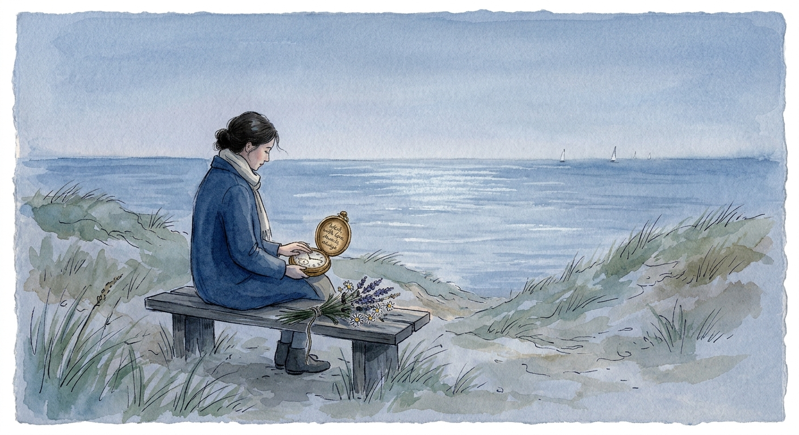

Across the Silent Bay
Across the Silent Bay is a poem about the vulnerability of reaching out, the ache of unanswered words, and the quiet heartbreak of waiting for
a response that may never come.
Through the imagery of a pigeon carrying a heartfelt message across the bay, the poem captures the courage it takes to
express what the heart has long kept hidden. Yet, as the message travels toward its destination, uncertainty takes hold.
Did it arrive at the right moment? Were its words understood? Or did their mystical language fail to reach a mind that
seeks clarity and reason?
The King of Swords symbolizes a world of logic, restraint, and emotional distance, contrasting with the speaker's deeply
personal and intuitive language. Faced with silence, the speaker begins to question not only the message but also the
decision to send it.
The poem ends with a solitary figure standing at the shore, eyes fixed on the distant horizon, waiting for a ship to
arrive. It is an image of lingering hope, wounded vulnerability, and the difficult space between reaching out and being
reached in return.
Ultimately, Across the Silent Bay is a reflection on the courage to speak from the heart, the uncertainty of how our
words are received, and the sorrow of waiting when silence is the only answer.
🎵 "Waiting for better times" - myshoun (Pixabay Music)
